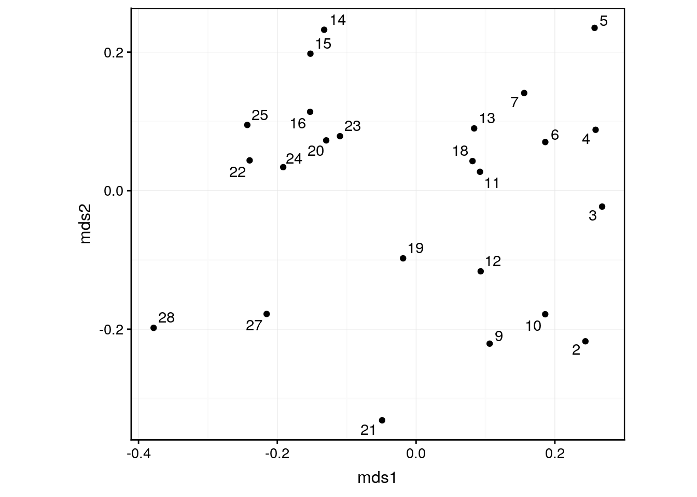
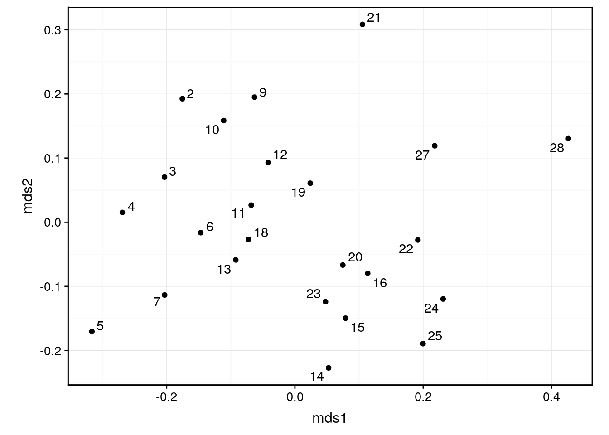
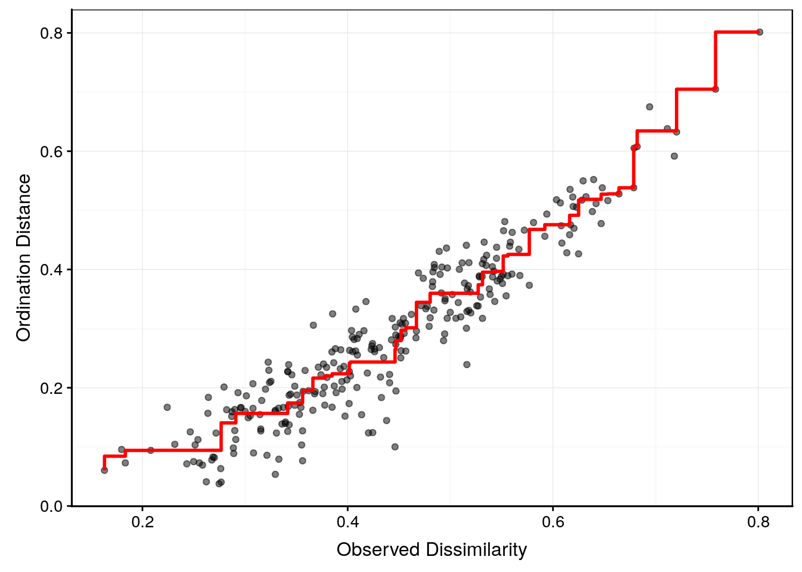

6.2 Positionnement multidimensionnel (MDS)
Le positionnement multidimensionnel, ou “multidimensional scaling” en anglais, d’où son acronyme fréquemment utilisé en français également : le MDS, est une autre façon de représenter clairement l’information contenue dans une matrice de distances. Ici, l’objectif n’est pas de regrouper ou de classifier les individus du tableau, mais de les ordonner sur un graphique en nuage de points en deux ou trois dimensions. Ce graphique s’appelle une “carte”, et la technique qui la réalise est une méthode d’ordination.
Au départ, nous avons p colonnes et n lignes dans le tableau cas par variables, c’est-à-dire, p variables quantitatives mesurées sur n individus distincts. Nous voulons déterminer les similitudes ou différences de ces n individus en les visualisant sur une carte où la distance d’un individu à l’autre représente cette similitude. Plus deux individus sont proches, plus ils sont semblables. Plus les individus sont éloignés, plus ils diffèrent. Ces distances entre paires d’individus, nous les avons déjà calculées dans la matrice de distances. Mais comment les représenter ? En effet, une représentation exacte ne peut se faire que dans un espace à p dimensions (même nombre de dimensions que de variables initiales). Donc, afin de réduire les dimensions à seulement 2 ou 3, nous allons devoir “tordre” les données et accepter de perdre un peu d’information. Ce que nous allons faire avec la MDS correspond exactement à cela : nous allons littéralement “écraser” les données dans un plan (deux dimensions) ou dans un espace à trois dimensions. C’est donc ce qu’on appelle une technique de réduction de dimensions.

Il existe, en réalité, plusieurs techniques de MDS. Elle répondent toutes au schéma suivant :
- A partir d’un tableau multivarié de n lignes et p colonnes, nous calculons une matrice de distances (le choix de la transformation initiale éventuelle et de la métrique de distance utilisée sont totalement libres ici17).
- Nous souhaitons représenter une carte (nuage de points) à k dimensions (k = 2, éventuellement k = 3) où les n individus seront placés de telle façon que les proximités exprimées par des valeurs faibles dans la matrice de dissimilarité soient respectées autant que possible entre tous les points.
- Pour y arriver les points sont placés successivement sur la carte et réajustés afin de minimiser une fonction de coût, encore appelée fonction de stress qui quantifie de combien nous avons dû “tordre” le réseau à p dimensions initial représentant les distances entre toutes les paires. C’est en adoptant différentes fonctions de stress que nous aboutissons aux différentes variantes de MDS. La fonction de stress est représentée graphiquement (voir ci-dessous) pour diagnostiquer le traitement réaliser et décider si la représentation est utilisable (pas trop tordue) ou non.
- Le positionnement des points faisant intervenir un facteur aléatoire (choix des points à placer en premier, réorganisation ensuite pour minimiser la fonction de stress), le résutat final peut varier d’une fois à l’autre sur les mêmes données, voir ne pas converger vers une solution stable. Il faut en être conscient.
Nous vous épargnons ici les développements mathématiques qui mènent à la définition de la fonction de stress. Nous nous concentrerons sur les principales techniques et sur leurs propriétés utiles en pratique.
6.2.1 MDS simplifiée sous SciViews::R
Dans R, il existe plus d’une dizaine de fonctions différentes pour réaliser le MDS. Afin de vous simplifier le travail et de pouvoir traiter votre MDS comme d’autres analyses similaires nous vous propoons les fonctions supplémentaites suivante. Ces fonctions sont à copier-coller en haut de vos scripts R, ou dans un chunk de “setup” à l’intérieur de vos documents R Markdown/Notebook.
SciViews::R()
library(broom)
# function mds for several multidimensionnal scaling functions ------
mds <- function(dist, k = 2, type = c("metric", "nonmetric", "cmdscale",
"wcmdscale", "sammon", "isoMDS", "monoMDS", "metaMDS"), p = 2, ...) {
type <- match.arg(type)
res <- switch(type,
metric = ,
wcmdscale = structure(vegan::wcmdscale(d = dist, k = k, eig = TRUE, ...),
class = c("wcmdscale", "mds", "list")),
cmdscale = structure(stats::cmdscale(d = dist, k = k, eig = TRUE, ...),
class = c("cmdscale", "mds", "list")),
nonmetric = ,
metaMDS = structure(vegan::metaMDS(comm = dist, k = k, ...),
class = c("metaMDS", "monoMDS", "mds", "list")),
isoMDS = structure(MASS::isoMDS(d = dist, k = k, ...),
class = c("isoMDS", "mds", "list")),
monoMDS = structure(vegan::monoMDS(dist = dist, k = k, ...),
class = c("monoMDS", "mds", "list")),
sammon = structure(MASS::sammon(d = dist, k = k, ...),
class = c("sammon", "mds", "list")),
stop("Unknown 'mds' type ", type)
)
# For non-metric MDS, we add also data required for the Shepard plot
if (type %in% c("nonmetric", "sammon", "isoMDS", "monoMDS", "metaMDS"))
res$Shepard <- MASS::Shepard(d = dist, x = res$points, p = p)
res
}
class(mds) <- c("function", "subsettable_type")
# plot.mds : MDS2 ~ MDS1 --------------------------------
plot.mds <- function(x, y, ...) {
points <- tibble::as_tibble(x$points, .name_repair = "minimal")
colnames(points) <- paste0("mds", 1:ncol(points))
plot(data = points, mds2 ~ mds1,...)
}
autoplot.mds <- function(object, labels, ...) {
points <- tibble::as_tibble(object$points, .name_repair = "minimal")
colnames(points) <- paste0("mds", 1:ncol(points))
if (!missing(labels)) {
if (length(labels) != nrow(points))
stop("You must provide a character vector of length ", nrow(points),
" for 'labels'")
points$.labels <- labels
chart::chart(points, mds2 ~ mds1 %label=% .labels, ...) +
geom_point() +
ggrepel::geom_text_repel() +
coord_fixed(ratio = 1)
} else {# Plot without labels
chart::chart(points, mds2 ~ mds1, ...) +
geom_point() +
coord_fixed(ratio = 1)
}
}
shepard <- function(dist, mds, p = 2)
structure(MASS::Shepard(d = dist, x = mds$points, p = p),
class = c("shepard", "list"))
plot.shepard <- function(x, y, l.col = "red", l.lwd = 1,
xlab = "Observed Dissimilarity", ylab = "Ordination Distance", ...) {
she <- tibble::as_tibble(x, .name_repair = "minimal")
plot(data = she, y ~ x, xlab = xlab, ylab = ylab, ...)
lines(data = she, yf ~ x, type = "S", col = l.col, lwd = l.lwd)
}
autoplot.shepard <- function(object, alpha = 0.5, l.col = "red", l.lwd = 1,
xlab = "Observed Dissimilarity", ylab = "Ordination Distance", ...) {
she <- tibble::as_tibble(object)
chart(data = she, y ~ x) +
geom_point(alpha = alpha) +
geom_step(chart::f_aes(yf ~ x), direction = "vh", col = l.col, lwd = l.lwd) +
labs(x = xlab, y = ylab)
}
# augment.mds -------------------------------------------
augment.mds <- function(x, data, ...){
points <- as_tibble(x$points)
colnames(points) <- paste0(".mds", 1:ncol(points))
bind_cols(data, points)
}
# glance.mds -------------------------------------------
glance.mds <- function(x, ...){
if ("GOF" %in% names(x)) {# Probably cmdscale() or wcmdscale() => metric MDS
tibble::tibble(GOF1 = x$GOF[1], GOF2 = x$GOF[2])
} else {# Non metric MDS
# Calculate linear and non linear R^2 from the Shepard (stress) plot
tibble::tibble(
linear_R2 = cor(x$Shepard$y, x$Shepard$yf)^2,
nonmetric_R2 = 1 - sum(vegan::goodness(x)^2)
)
}
}6.2.2 MDS métrique ou PCoA
La forme classique, aussi appelée MDS métrique ou analyse en coordonnées principales (Principal Coordinates Analysis en anglais ou PCoA), va projetter le nuage de points à p dimensions dans un espace réduit à k = 2 dimensions (voire éventuellement à 3 dimensions). Cette projection se fait de manière similaire à une ombre chinoise projettée d’un objet tridimensionnel sur une surface plane en deux dimensions.

Ombre chinoise : un placement astucieux des mains dans le faisceau lumineux permet de projetter l’ombre d’un animal ou d’un objet sur une surface plane. La PCoA fait de même avec vos données.
Considérons un relevé de couverture végétale en 24 stations concernant 44 plantes répertoriées sur le site de l’étude, par exemple, Callvulg est Calluna vulgaris, Empenigr est Empetrum nigrum, etc. Les valeurs sont les couvertures végétales observées pour chaque plante sur le site, expérimées en pourcents. La première colonne nommée rownames à l’importation contient les identifiants des stations (chaînes de caractères). Nous la renommons donc pour un intitulé plus explicite : station.
read("varespec", package = "vegan") %>.%
rename(., station = rownames) -> veg
veg# # A tibble: 24 x 45
# station Callvulg Empenigr Rhodtome Vaccmyrt Vaccviti Pinusylv Descflex
# <chr> <dbl> <dbl> <dbl> <dbl> <dbl> <dbl> <dbl>
# 1 18 0.55 11.1 0 0 17.8 0.07 0
# 2 15 0.67 0.17 0 0.35 12.1 0.12 0
# 3 24 0.1 1.55 0 0 13.5 0.25 0
# 4 27 0 15.1 2.42 5.92 16.0 0 3.7
# 5 23 0 12.7 0 0 23.7 0.03 0
# 6 19 0 8.92 0 2.42 10.3 0.12 0.02
# 7 22 4.73 5.12 1.55 6.05 12.4 0.1 0.78
# 8 16 4.47 7.33 0 2.15 4.33 0.1 0
# 9 28 0 1.63 0.35 18.3 7.13 0.05 0.4
# 10 13 24.1 1.9 0.07 0.22 5.3 0.12 0
# # … with 14 more rows, and 37 more variables: Betupube <dbl>,
# # Vacculig <dbl>, Diphcomp <dbl>, Dicrsp <dbl>, Dicrfusc <dbl>,
# # Dicrpoly <dbl>, Hylosple <dbl>, Pleuschr <dbl>, Polypili <dbl>,
# # Polyjuni <dbl>, Polycomm <dbl>, Pohlnuta <dbl>, Ptilcili <dbl>,
# # Barbhatc <dbl>, Cladarbu <dbl>, Cladrang <dbl>, Cladstel <dbl>,
# # Cladunci <dbl>, Cladcocc <dbl>, Cladcorn <dbl>, Cladgrac <dbl>,
# # Cladfimb <dbl>, Cladcris <dbl>, Cladchlo <dbl>, Cladbotr <dbl>,
# # Cladamau <dbl>, Cladsp <dbl>, Cetreric <dbl>, Cetrisla <dbl>,
# # Flavniva <dbl>, Nepharct <dbl>, Stersp <dbl>, Peltapht <dbl>,
# # Icmaeric <dbl>, Cladcerv <dbl>, Claddefo <dbl>, Cladphyl <dbl>Typiquement ce genre de données ne contient pas d’information constructive lorsqu’une plante est simultanément absente de deux stations (double zéros). Donc, les métriques de type euclidienne ou Manhattan ne conviennent pas ici. Nous devons choisir entre distance de Bray-Curtis ou Canberra en fonction de l’importance que nous souhaitons donner aux plantes les plus rares (avec couverture végétale faible et/ou absentes de la majorité des stations).
Afin de décider quelle métrique utiliser, visualisons à présent l’abondance ou la rareté des différentes plantes :
veg %>.%
select(., -station) %>.% # Colonne 'station' pas utile ici
gather(., key = "espèce", value = "couverture") %>.% # Tableau en format long
chart(., couverture ~ espèce) +
geom_boxplot() + # Boites de dispersion
labs(x = "Espèce", y = "Couverture [%]") +
coord_flip() # Labels plus lisibles si sur l'axe Y
Comme nous pouvions nous y attendre, sept ou huit espèces dominent la couverture végétales et les autres données sont complètement écrasées à zéro sur l’axe pour la majorité des stations. Si nous utilisons la distance de Bray-Curtis, l’analyse sera pratiquement réalisée sur seulement ces quelques espèces dominantes. Avec Canberra, nous risquons par contre de donner beaucoup trop d’importance aux espèces extrêmement rares (toutes les espèces ont une importance égale avec cette métrique). Une solution intermédiaire est de transformer les données pour réduire l’écart d’importance entre les espèces abondantes et les rares, soit avec \(log(x + 1)\), soit avec \(\sqrt{\sqrt{x}}\). Voyons ce que donne la transformation logarithmique ici en utilisant la fonction log1p() dans R.
veg %>.%
select(., -station) %>.%
gather(., key = "espèce", value = "couverture") %>.%
chart(., log1p(couverture) ~ espèce) + # Transformation log(couverture + 1)
geom_boxplot() +
labs(x = "Espèce", y = "Couverture [%]") +
coord_flip()
C’est nettement mieux car les données concernant les espèces rares ne sont plus totalement écrasées vers zéro sur l’axe horizontal ! La matrice de distances de Bray-Curtis sur nos données transformées log est la première étape de l’analyse :
veg %>.%
select(., -station) %>.%
log1p(.) %>.%
vegan::vegdist(., method = "bray") -> veg_distN’imprimez pas le contenu de veg_dist ! C’est de toutes façons illisible. La PCoA va visualiser son contenu de manière bien plus utile. La seconde étape consiste à calculer notre MDS métrique en utilisant mds$metric()
veg_mds <- mds$metric(veg_dist)Ensuite, troisième étape, le but étant de visualiser les distances nous effectons immédiatement un graphique comme suit :
autoplot(veg_mds, labels = veg$station)
Ce graphique s’interprète comme suit :
- Des stations proches l’une de l’autre sur la carte ont des indices de dissimilarité faibles. Ces stations sont semblables du point de vue de la couverture végétale.
- Plus les stations sont éloignées les unes des autres, plus elles sont dissemblables.
- Si des regroupements apparaissent sur la carte, il se peut que ce soit des biotopes semblables, et qui diffèrent des autres regroupements. Par exemple ici, les stations 14–15, 20 et 22–25 forment un groupe relativement homogène en haut à gauche du graphique qui s’individualise du reste. Au contraire, les stations 5, 21, ou encore 27 ou 28 sont relativement isolées et constituent donc des assemblages végétaux uniques.
- Les stations aux extrémités sont des configurations extrêmes ; celles au centre sont des configurations plus courantes.
- Par contre, ni l’orientation des axes, ni les valeurs absolues sur ces axes n’ont de significations particulières ici. N’en tenez pas compte.
Attention : rien ne garantit que notre MDS métrique projettée en deux dimensions soit suffisamment représentative des données dans leur ensemble. Si la méthode n’a pas réussi à représenter fidèlement les données, c’est que ces dernières sont trop complexes et ne s’y prêtent pas. Contrôlez donc toujours les indicateurs que sont les valeurs de “Goodness-of-fit” (GOF, qualité d’ajustement).
Les indicateurs “GOF” sont obtenus via la fonction glance() :
glance(veg_mds)# # A tibble: 1 x 2
# GOF1 GOF2
# <dbl> <dbl>
# 1 0.527 0.554Ici GOF1 est la somme des valeurs propres obtenues lors du calcul (ces valeurs propres vous seront expliquées dans le module suivant consacré à l’ACP). Retenez simplement que c’est une mesure de la part de variance du jeu de données initial qui a pu être représentée sur la carte. Plus la valeur se rapproche de 1, mieux c’est, avec des valeurs > 0.7 ou 0.8 qui restent acceptables. Le second indicateur, GOF2 est la somme uniquement des valeurs propres positives. Certains préfèrent ce dernier indicateur. En principe, les deux sont proches ou égaux. Donc, le choix de l’un ou de l’autre ne devrait pas fondamentalement modifier vos conclusions.
Ici, avec des valeurs de goodness-of-fit à peine supérieures à 50% nous pouvons considérer que la carte n’est pas suffisamment représentative. Soit nous tentons de la représenter en trois dimensions (mais c’est rarement plus lisible car il faut quand même se résigner à présenter ce graphique 3D dans un plan à deux dimensions -l’écran de l’ordinateur, ou une feuille de papier- au final). Une autre solution lorsque la MDS métrique ne donne pas satisfaction est de se tourner vers la MDs non métrique. Ce que nous allons faire ci-dessous.
A noter que la PCoA sur matrice euclidienne après standardisation ou non des données est équivalente à une Analyse en Composantes Principales (ACP) que nous étudierons dans le module suivant, … mais avec un calcul nettement moins efficace. Dans ce contexte, la PCoA n’a donc pas grand intérêt. Elle est surtout utile lorsque vous voulez représenter des métriques de distances différentes de la distance euclidienne comme c’est le cas ici avec un choix de distances de Bray-Curtis.
6.2.3 MDS non métrique
La version non métrique de la MDS vise à réaliser une carte sur base de la matrice de distances, mais en autorisant des écarts plus flexibles entre les individus… pour autant que des individus similaires restent plus proches les uns des autres que des individus plus différents, et ce, partout sur la carte. Donc, une dissimilarité donnée pourra être “compressée” ou “dilatée”, pour autant que la distortion garde l’ordre des points intacts. Cela signifie que la distortion se fera via une fonction monotone croissante (une dissimilarité plus grande ne pouvant pas être représentée par une distance plus petite sur la carte).
La distortion ainsi introduite est appelée un stress. C’est un peu comme si vous écrasiez par la force un objet 3D sur une surface plane, au lieu de juste en projeter l’ombre. Comme il existe différentes fonctions de stress, il existe donc différentes versions de MDS non métriques. Ici, nous nous attacherons à maitriser une version implémentée dans mds$nonmetric(). Il s’agit de l’une des premières formes de MDS non métriques qui a été proposée par le statisticien Joseph Kruskal (on parle aussi du positionnement multidimensionnel de Kruskal).
La logique est la même que pour la MDS métrique :
- étape 1 : construction d’une matrice de distances,
- étape 2 : calcul du positionnement des points,
- étape 3 : réalisation de la carte et vérification de sa validité.
Repartons de la même matrice de distances déjà réalisée pour la MDS métrique qui se nomme veg_dist. Le calcul est itératif. Comme il n’est pas garanti de converger, ni de donner la meilleure réponse, nous utilisons ici une fonction “intelligente” qui va effectuer une recherche plus poussée de la solution optimale, notamment en partant de différentes configurations au départ. Pour les détails et les paramètres de cet algorithme, voyez l’aide en ligne de la fonction ?vegan::metaMDS. Dans le cadre de ce cours, nous ferons confiance au travail réalisé et vérifierons juste qu’une solution est trouvée (indication *** Solution reached à la fin). Notez toutefois que le stress est quantifié. Il tourne ici autour de 0,126. Plus la valeur de stress est basse, mieux c’est naturellement.
veg_nmds <- mds$nonmetric(veg_dist) # Calcul# Run 0 stress 0.1256617
# Run 1 stress 0.1262346
# Run 2 stress 0.1262346
# Run 3 stress 0.1262346
# Run 4 stress 0.1256617
# ... Procrustes: rmse 1.056302e-05 max resid 3.244521e-05
# ... Similar to previous best
# Run 5 stress 0.1256617
# ... Procrustes: rmse 6.341228e-06 max resid 1.783762e-05
# ... Similar to previous best
# Run 6 stress 0.1256617
# ... Procrustes: rmse 1.768348e-05 max resid 4.243365e-05
# ... Similar to previous best
# Run 7 stress 0.1262346
# Run 8 stress 0.1262346
# Run 9 stress 0.1256617
# ... Procrustes: rmse 1.668964e-05 max resid 5.282751e-05
# ... Similar to previous best
# Run 10 stress 0.1262347
# Run 11 stress 0.1912667
# Run 12 stress 0.1262346
# Run 13 stress 0.1256617
# ... Procrustes: rmse 1.797304e-05 max resid 5.269659e-05
# ... Similar to previous best
# Run 14 stress 0.1256617
# ... Procrustes: rmse 1.209131e-05 max resid 3.718001e-05
# ... Similar to previous best
# Run 15 stress 0.2004491
# Run 16 stress 0.1256617
# ... New best solution
# ... Procrustes: rmse 9.079683e-06 max resid 3.527497e-05
# ... Similar to previous best
# Run 17 stress 0.1262347
# Run 18 stress 0.1262346
# Run 19 stress 0.2250581
# Run 20 stress 0.2105936
# *** Solution reachedA présent, nous pouvons représenter la carte.
autoplot(veg_nmds, labels = veg$station)
Nous avons une représentation assez différente de celle de la MDS métrique. Les stations 5, 21, 27 et 28 sont toujours isolées, mais le reste est regroupé de manière plus homogène. Comment savoir si cette représentation est meilleure que la version métrique qui avait une “goodness-of-fit” décevante ? En visualisant les indicateurs de qualité d’ajustement, ainsi que la fonction de stress sur un graphique dit graphique de Shepard. Comme d’habitude, glance() nous donne les statistiques voulues.
glance(veg_nmds)# # A tibble: 1 x 2
# linear_R2 nonmetric_R2
# <dbl> <dbl>
# 1 0.919 0.984Le premier indicateur (R2 linéaire) est le coefficient de corrélation linéaire de Pearson entre les distances ajustées et les distances sur la carte au carré. Plus cette valeur est proche de un, moins les distances sont tordues. Le second indicateur, le R2 non métrique est calculé comme 1 - S2 où S est le stress (tel que quantifié plus haut lors de l’appel à la fonction mds$nonmetric()). Cette dernière statistique indique si l’ordre des points respecte l’ordre des distances partout sur le graphique. Avec 0,98, la valeur est excellente ici. Ensuite le R2 linéaire nous indique de combien les différentes distances sont éventuellement distordues. Avec une valeur de 0,92, la distortion n’est pas trop forte ici.
Le diagramme de Shepard permet de visualiser dans le détail la distortion introduite pour parvenir à réaliser la carte en deux dimensions.
veg_sh <- shepard(veg_dist, veg_nmds)
autoplot(veg_sh)
Sur l’axe des abscisses, nous avons les valeurs de dissimilarité présentes dans la matrice de distances. Sur l’axe des ordonnées, le graphique représente les distances de l’ordination, c’est-à-dire, les distances entre les paires de points sur la carte. Chaque point correspond à la dissimilarité d’une paire d’individus sur X, et à la distance entre cette paire sur la carte en Y. Enfin, le trait en escalier rouge matérialise la fonction monotone croissante choisie pour distordre les distances. C’est la fonction de stress.
Ce diagramme se lit comme suit :
- Plus les points sont proches de la fonction de stress, mieux c’est. Le R2 non métrique sera également d’autant plus élevé que les points sont proches de la fonction.
- Plus la fonction de stress est linéaire, plus les distances respectent les valeurs de dissimilarités. Le R2 linéaire est lié à la plus ou moins bonne linéarité de la fonction de stress.
Vous pouvez très bien décider que seul l’ordre des individus sur la carte compte. Dans ce cas, la forme de la fonction de stress et la valeur du R2 linéaire importent peu. Seul compte la proximité la plus forte possible des points par rapport à la fonction de stress sur le diagramme de Shepard, ainsi donc que la valeur du R2 non métrique.
Si par contre, vous voulez être plus contraignant, alors, les distances seront considérées également comme importantes. Vous rechercherez alors une fonction de stress pas trop éloignée d’une droite, ainsi qu’un R2 linéaire élevé. Dans ce cas, nous nous rapprochons des exigences de la MDS métrique.
Ici, nous pouvons constater que les deux critères sont bons. Nous pouvons donc nous fier à la carte obtenue à l’aide de la MDs non métrique de Kruskal.
Restez toujours attentif à la taille du jeu de données que vous utilisez pour réaliser une MDS, en particuliers une MDS non métrique. Quelques centaines de lignes, ça dois passer, plusieurs dizaines de milliers ou plus, ça ne passera pas ! La limite dépend bien sûr de la puissance de votre ordinateur et de la quantité de mémoire vive disponible. Retenez toutefois que la quantité de calculs augmente drastiquement avec la taille du jeu de données à traiter.
Pour en savoir plus
La fonction
mds()donne accès à d’autres versions de MDS non métriques également. Ainsi,mds$isoMDS()oumds$monoMDS()correspondent toutes deux à la version de Kruskal mais en utilisant une seule configuration de départ (donc, moins robustes mais plus rapides à calculer). Lamds$sammon()est une autre forme de MDS non métrique décrite dans l’aide en ligne de?MASS::sammon.Des techniques existent pour déterminer la dimension k idéale de la carte. Le graphique des éboulis (screeplot en anglais) sera abordé au module suivante dans le cadre de l’ACP. Il en existe une version pour le MDS, voyez ici (en anglais).
A vous de jouer !
- Réalisez le tutoriel afin de vérifier votre bonne compréhension de la mds.
Démarrez la SciViews Box et RStudio. Dans la fenêtre Console de RStudio, entrez l’instruction suivante suivie de la touche Entrée pour ouvrir le tutoriel concernant les bases de R :
BioDataScience2::run("06b_mds")ESC pour reprendre la main dans R à la fin d’un tutoriel dans la console R.
- Complétez votre carnet de note par binôme sur le transect entre Nice et Calvi débuté lors du module 5. Lisez attentivement le README (Ce dernier a été mis à jour).
Completez votre projet. Lisez attentivement le README.
La dernière version du README est disponible via le lien suivant :
Chaque métrique de distance offre un éclairage différent sur les données. Elles agissent comme autant de filtres différents à votre disposition pour explorer vos données multivariées.↩